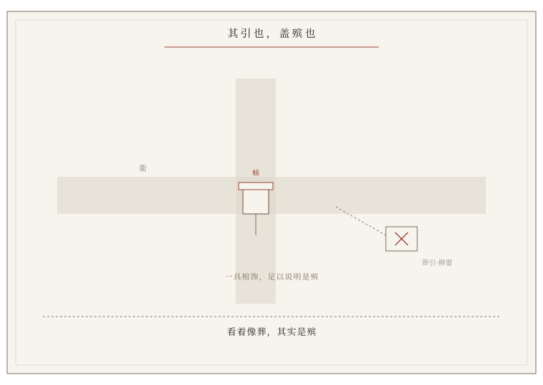

檀弓上 · 三·十 · 第 213 课
孔子少孤，不知其墓；殡于五父之衢，人见之皆以为葬，其引也盖殡也；问于郰曼父之母，然后得合葬于防。末及「邻有丧，舂不相；里有殡，不巷歌」「丧冠不緌」。注「孔子亦为隐焉」「慎当为引，礼家读然，声之误也」「去饰」。
说什么事：不知道父亲葬在哪里的人，把母亲的棺停在路口。
落在哪一层：礼，兼及礼制之辨与礼意。论「以疑求问」的权法与乡里助哀之节。
为何编在此位：上节论送终之备，此节收以一事：不知则问，问则以礼。檀弓上前十节，自继统、事伦、丧拜、哭位以至殡葬之细，至此告一段落。
【经】孔子少孤，不知其墓。殯於五父之衢，人之見之者，皆以為葬也。其慎也，蓋殯也。問於郰曼父之母，然後得合葬於防。鄰有喪，舂不相；里有殯，不巷歌。喪冠不緌。
【注】孔子之父郰叔梁紇與顏氏之女徵在野合而生孔子，徵在恥焉，不告。殯於五父之衢，欲有所就而問之。孔子亦為隱焉：殯於家，則知之者無由怪己，欲發問端。五父，衢名，蓋郰曼父之鄰。人之見之者，皆以為葬也，見柩行於路也。其慎也，蓋殯也；慎當為引，禮家讀然，聲之誤也。殯引，飾棺以輤；葬引，飾棺以柳翣。孔子是時以殯引，不以葬引，時人見者，謂不知禮。問於郰曼父之母，然後得合葬於防：曼父之母，與徵在為鄰，相善。鄰有喪，舂不相；里有殯，不巷歌：皆所以助哀也；相，謂以音聲相勸。喪冠不緌：去飾。
【疏】此一节论孔子访父墓之事。孔子既少孤失父，其母不告父墓之处；今母既死，欲将合葬，不知父墓所在，意欲问人，故若殡母于家，则礼之常事，他人无由怪己，故殡于五父之衢，欲使他人怪而致问于己。外人见柩行路，皆以为葬；但葬引柩之时，饰棺以柳翣，其殡引之礼，饰棺以輤，当夫子饰其所引之棺以輤，故云「其引也盖殡也」；殡不应在外，故称「盖」，为不定之辞。于时郰曼父之母素与孔子母相善，见孔子殡母于外，怪问孔子，孔子因其所怪，遂问郰曼父之母，始知父墓所在，然后得以父母尸柩合葬于防。注「孔子至不告」：按《史记·孔子世家》云「叔梁纥与颜氏女野合而生孔子」，郑用《世家》之文，故注言「野合」，不备于礼也；若《论语》云「先进于礼乐，野人也」及「野哉，由也」，非谓草野而合也；但徵在耻其与夫不备礼为妻，见孔子知礼，故不告。言「不知其墓」者，谓不委曲适知柩之所在，不是全不知墓之去处。今将欲合葬，须正知处所，故云「不知其墓」。注「慎当至知礼」：挽柩为引，无名慎者，以慎、引声相近，故云「慎」当为引；云「礼家读然」者，然犹如是，言礼家读如是引字，故《大司徒》云「大丧属其六引」，是读引也；云「殡引饰棺以輤」者，案《杂记》，诸侯行而死於道，其輤有裧，缁布裳帷；輤为赤色，大夫布裳帷，士苇席以为屋、蒲席以为裳帷；大夫以下虽无輤，取诸侯輤同名，故饰棺以輤；云「葬引饰棺以柳翣」者，案《丧大记》，君龙帷、黼荒、黼翣二、黻翣二、画翣二，大夫画帷、画荒、黻翣二、画翣二，士布帷、布荒、画翣二，在上曰荒，在旁曰帷，总谓之柳，故云「饰棺以柳翣」。
少孤 年幼失父。
五父之衢 注「五父，衢名」，鲁之城中路。
其慎也 注「慎当为引」。挽柩之索曰引。此句读作「其引也」。
輤 柳翣 輤为殡引之棺饰（赤色帷裳之类）；柳翣为葬引之棺饰，荒帷之属总谓之柳。
盖 疏「殡不应在外，故称盖，为不定之辞」。推测之辞。
舂不相 舂米时不唱和。相，以音声相劝。
不巷歌 里中有殡，不在巷中歌唱。
緌 冠缨之垂饰。丧冠去緌，即去饰。
孔子年幼失父，不知父亲葬在何处。母亲死了，他把棺停在五父之衢。路过的人见了，都以为是出葬；看那挽棺的饰，其实是殡。后来问郰曼父的母亲，才得知父墓所在，得以合葬于防。邻家有丧，舂米不相唱和；里中有殡，不在巷中唱歌；丧冠不加垂饰。
此节三事：一、殡于衢以求问；二、殡引与葬引之辨；三、乡里助哀与丧冠去饰。第一事最见古人心思：孔子欲问父墓所在，若殡母于家，则人之常事，无人来问；故特殡于通衢，使人怪而问己，己乃得因而问人。这是以「不合常礼」的一步，换一个可以开口的机会。第二事是旁观者的误认，郑注一句「时人见者，谓不知礼」，恰说明那一代人看得懂棺饰之别。第三事两句，把哀声从一家的门内扩到一里之内。
第一层 以疑求问 注「孔子亦为隐焉」：殡于家则知之者无由怪己，殡于衢则人必怪而问。夫子不是不知礼，是宁可受一时「不知礼」之讥，也要问出父亲葬处。礼节可以让，所急者在此。这一层最难学：为了一件必须问清的事，肯先把自己摆在会被议论的位置上。
第二层 殡引与葬引 注「慎当为引」，声之误也。殡引饰棺以輤，葬引饰棺以柳翣。疏据《杂记》《丧大记》详其制：诸侯輤有裧、缁布裳帷；君龙帷黼荒，黼翣二、黻翣二、画翣二；大夫画帷画荒；士布帷布荒、画翣二。在上曰荒，在旁曰帷，总谓之柳。一具棺在路上的饰，就足以告诉行人这是殡还是葬。礼之可读，正在这些细节上。
第三层 乡里助哀 「邻有丧，舂不相；里有殡，不巷歌」。注「皆所以助哀也」。舂米本有杵声相和之节，邻有丧则停其唱和；巷歌本属日常，里有殡则不歌。哀不在其家，而在一里之内皆为之减声。礼不止约束自己，也调节共处一境之人的声音。
第四层 丧冠不緌 注「去饰」。緌是冠缨之垂饰，平时有之，丧则去之。此与上二句同类：哀之为礼，先从「减」入手——减声、减饰。不必加什么，先减掉什么。
与今日何干 不明白的事，先找一个能让人开口的办法，而不是硬撑着了事。此节另一面也极实用：一个社区里有人遭了事，最得体的回应往往不是说什么，而是把自家的声响调低一档。
| 左 | 右 |
|---|---|
| 少孤不知其墓 | 母耻而不告，非全不知去处 |
| 殡于五父之衢 | 殡于家则无人怪问，欲发问端 |
| 人皆以为葬 | 见柩行于路 |
| 其慎也，盖殡也 | 慎当为引；殡引饰以輤，葬引饰以柳翣 |
| 问于郰曼父之母 | 与徵在邻而相善 |
| 然后得合葬于防 | 父母尸柩同穴 |
| 舂不相、不巷歌 | 皆所以助哀 |
| 丧冠不緌 | 去饰 |
画一条城中十字路口的一角，视点略高。路中央停着一具棺，棺上覆赤色帷裳（輤），棺侧系两道挽索，索端拖在地上无人执——示「殡引而止于路」。路口两侧各有一两位行人驻足回望，其中一人抬手向棺的方向指，面上是疑惑而非哀戚（示「皆以为葬」）。路旁一侧的屋墙下有石础与短柱，另一侧可见一条窄巷深入。地面有车辙与浅尘。不写文字、不画丧服之人。赭色只用在棺上的赤色帷裳与那道挽索上。
